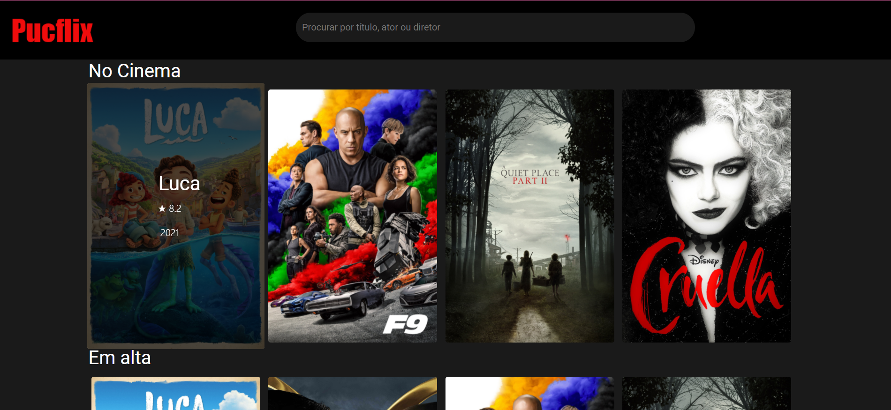

Sendo uma das matérias que na minha opinião mais me deixou interessado no curso, Desenvolvimento interface web (DIW) nos proporcionou conhecimentos na qual jamais imaginaria ter antes. Graças as suas atividades completamente voltadas para o propósito da matéria, conseguimos aprender diversos conceitos de progrmação WEB.
A atividade que jamais irei esquecer e que fiz com total gosto foi o desenvolvimento de um portal de Filmes. Onde tivemos que integrar o nosso portal com a API do TheMovieDB.
API: A sigla API deriva da expressão inglesa Application Programming Interface que, traduzida para o português, pode ser compreendida como uma interface de programação de aplicação. Ou seja, API é um conjunto de normas que possibilita a comunicação entre plataformas através de uma série de padrões e protocolos.
Algumas das atividades foram realizadas pela plataforma canvas.